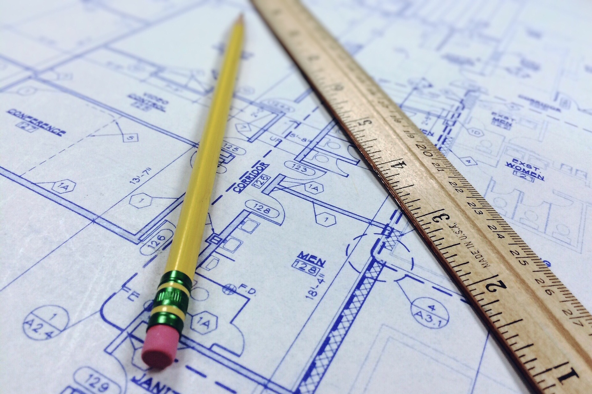

Progettazione
Progetti architettonici e tecnici, frazionamenti, ristrutturazioni e interventi edilizi in aderenza alla normativa vigente.
AutoCAD
Ristrutturazione
Studio Tecnico — Geometra
Potenza (PZ) · Provincia di Potenza
Progettazione, direzione lavori, topografia e servizi catastali
Soluzioni tecniche affidabili per privati e imprese
Studio
Professionista iscritto all’ordine, attivo nella provincia di Potenza con attenzione alla qualità tecnica e alla relazione con il cliente.

Indirizzo: Contrada Limitone 4 — 85100 Potenza (PZ)
Telefono:
+39 0971 685033
WhatsApp:
+39 347 880 3085
Formazione: Università degli Studi della Basilicata (1990–1992); I.T.G. “De Lorenzo” — Potenza (1984–1990).
Cosa facciamo
Servizi tecnici per privati e imprese: dalla progettazione alle pratiche catastali, con strumenti digitali e rilievi sul campo. Le competenze strumentali sono indicate su ogni ambito.
Progetti architettonici e tecnici, frazionamenti, ristrutturazioni e interventi edilizi in aderenza alla normativa vigente.

Direzione e coordinamento dei lavori, supporto al committente durante il cantiere e verifiche di conformità esecutiva.

Rilievi topografici, quote, confini e supporto alle fasi progettuali e catastali con strumentazione GPS.

Variazioni catastali, accatastamenti, aggiornamenti di mappa e consulenza per la corretta rappresentazione degli immobili.

Assistenza nelle procedure di successione e nelle pratiche correlate agli immobili e alle titolarità.
Consulenza per impianti eolici e fotovoltaici: fasi autorizzative, integrazione urbanistica e supporto tecnico per valutare fattibilità e vincoli sul territorio.
Analisi preliminare del sito, vincoli paesaggistici e urbanistici, supporto nella documentazione tecnica per istanze e autorizzazioni.
Verifiche di copertura, ombreggiamenti, integrazione architettonica e supporto alle pratiche edilizie e catastali connesse all’impianto.
Contattaci
Per appuntamenti e informazioni utilizza i recapiti sotto. Siamo a Potenza, in Contrada Limitone.
Trasparenza
Sezione riservata ai dati societari per fatturazione e obblighi di trasparenza. Sostituire i segnaposto TODO con le informazioni corrette prima della pubblicazione.
TODO — da compilare